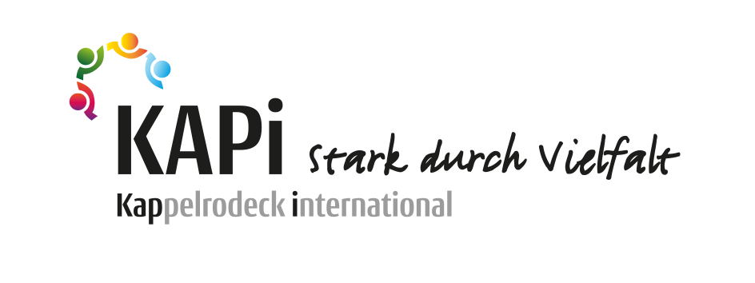

Samstag, 27. Juni
Sommerfest am Marktplatz
Musik, Essen aus aller Welt und Spiele für Kinder. Bring gern ein Gericht aus deiner Heimat mit – der Eintritt ist frei.
Wir sind KAPi – das Netzwerk für Integration, Begegnung und Vielfalt in Kappelrodeck. Menschen, Vereine und Gemeinde arbeiten zusammen, damit sich hier alle willkommen fühlen. Egal, woher sie kommen.
Unter dem Dach von KAPi arbeiten Menschen, Vereine und die Gemeinde zusammen für ein offenes Kappelrodeck. Wir bringen Einheimische und Menschen aus aller Welt zusammen – im Alltag, beim Lernen, beim Feiern.

Egal woher du kommst, welche Sprache du sprichst oder wie alt du bist – du bist willkommen. Ohne Anmeldung, ohne Kosten.
Ein Tee, ein Gespräch, ein Spiel. Bei uns zählt das einfache Zusammenkommen – nicht das Formular.
Ehrenamtliche, Sprachpaten und Nachbarn gestalten das Programm gemeinsam. Jede helfende Hand zählt.
KaM·in ist der Ort, an dem KAPi lebendig wird: unser offener Bürgertreff am Kappler Marktplatz. Der Name spielt auf das englische „Come in“ an – und genau so ist es gemeint.
Feste Treffpunkte, auf die du dich verlassen kannst. Komm einfach vorbei – alles ist kostenlos.
Deutsch üben in lockerer Runde – für alle Sprach-Niveaus.
Unterstützung bei Hausaufgaben und beim Lesen- und Schreibenlernen.
Fröhliches Beisammensein für Einheimische und Zugezogene.
Handarbeitstreff: nähen, stricken, häkeln. Material ist da.
Karten- und Brettspiele für alle. Komm einfach mit.
Gemeinsam Musik machen am Wochenende.
Dazu kommen besondere Aktionen wie Afrikanisches Trommeln oder das Sommerfest am Marktplatz – Termine findest du unter „Aktuelles“.
Musik, Essen aus aller Welt und Spiele für Kinder. Bring gern ein Gericht aus deiner Heimat mit – der Eintritt ist frei.
Alle Treffen und Termine im Juni auf einen Blick – zum Ausdrucken, Aufhängen und Weitergeben an die Nachbarn.
Du sprichst gut Deutsch und magst Menschen? Schon eine Stunde pro Woche hilft. Wir zeigen dir alles.
KAPi lebt von Menschen, die etwas geben – Zeit, Sprache, ein offenes Ohr. Du brauchst keine Ausbildung. Nur Lust auf Menschen.
Der einfachste Anfang: Besuch uns bei KaM·in, trink einen Tee und schau, was zu dir passt.
Hilf beim Deutsch-Üben – schon eine Stunde pro Woche macht einen Unterschied. Du bestimmst, wann und wie oft.
Trommeln, Kochen, Werken, Musik? Unser Programm entsteht aus den Ideen der Menschen, die mitmachen.